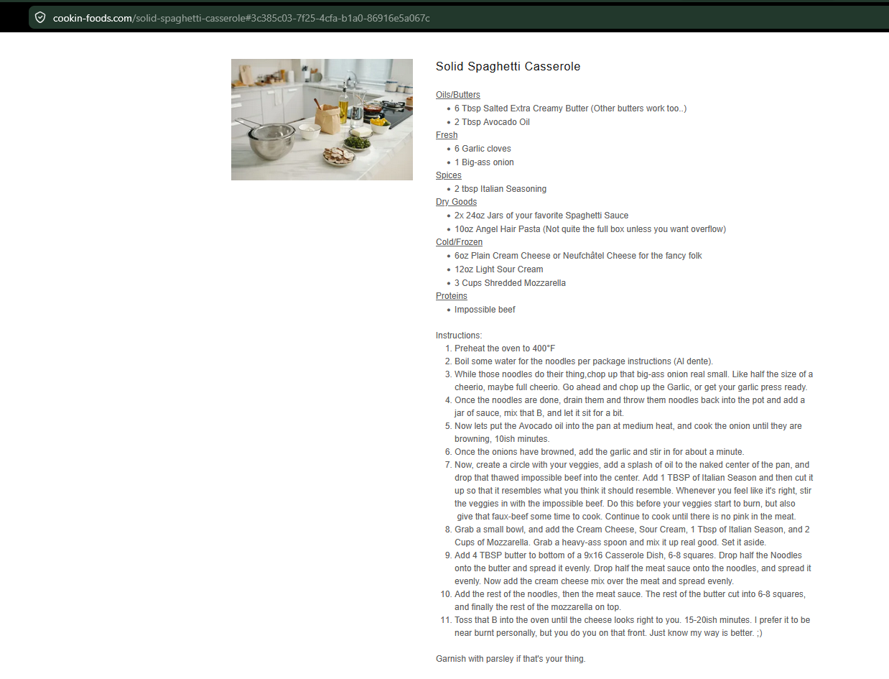

Solid Spaghetti Casserole
A hearty vegetarian spaghetti casserole with impossible beef, cream cheese, sour cream, and mozzarella.
Ingredients
Sauce and Pasta
- 2 (24 oz) jars spaghetti sauce
- 10 oz angel hair pasta
- 6 tbsp salted butter, divided
- 2 tbsp avocado oil
Vegetables and Protein
- 6 garlic cloves
- 1 large onion
- Impossible beef
Seasoning and Cheese
- 2 tbsp Italian seasoning
- 6 oz cream cheese or Neufchâtel
- 12 oz sour cream
- 3 cups shredded mozzarella
Instructions
Prepare
Preheat oven to 400°F. Boil pasta until al dente, then drain.
Sauce noodles
Return noodles to the pot and add a jar of spaghetti sauce. Mix and let sit briefly.
Cook aromatics
Heat avocado oil in a pan over medium heat. Cook onion about 10 minutes until browned, then add garlic and cook about 1 minute.
Cook protein
Add impossible beef and Italian seasoning. Cook until browned and no pink remains.
Make creamy layer
In a bowl, mix cream cheese, sour cream, 1 tbsp Italian seasoning, and 2 cups mozzarella until combined.
Layer
Butter a 9×16 casserole dish. Add half the noodles, spread evenly, then add half the butter in small pieces. Add the rest of the noodles, then the meat sauce. Spread the cream cheese mixture over the meat and top with remaining mozzarella.
Bake
Bake 15–20 minutes, until cheese is melted and the casserole is hot. Let sit a few minutes before cutting.
Notes
- This is a heavy, rich casserole. If you like browned cheese, bake until the top is deeply golden.